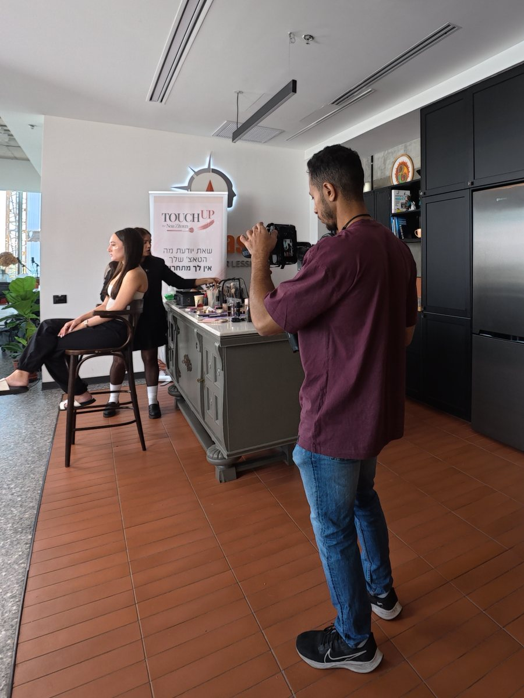
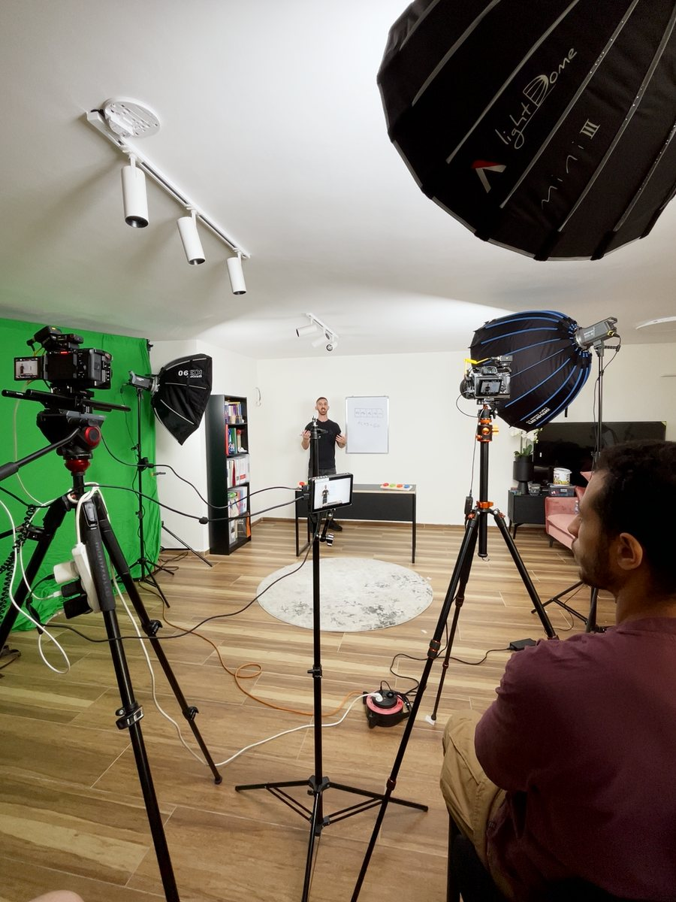

המצלמה נכבתה, הקובץ לא נפתח, והלקוח מחכה.
אם הגעתם לכאן, כנראה שאחד מאלה קרה לכם היום:
- המצלמה נכבתה באמצע הצילום, נגמרה הסוללה, או שהכרטיס נשלף שנייה מוקדם מדי, ובמקום הסרטון יש קובץ שלא נפתח.
- בסוני נשאר על הכרטיס קובץ עם סיומת RSV. ב-DJI, ב-GoPro ובמצלמות אחרות נשאר קובץ MP4 שנראה רגיל לגמרי, וכל נגן מסרב לפתוח אותו.
- שינוי הסיומת לא עזר. המרה לא עזרה. גם Premiere וגם Resolve מסרבים לייבא את הקובץ.
- וזה לא סתם קובץ: חתונה, הרצאה, ראיון, יום צילום שלם. הלקוח מחכה, ואי אפשר לצלם את זה שוב.
כנראה כבר ניסיתם כמה דברים
רוב האנשים מגיעים לכאן אחרי שעברו על הרשימה הזאת, ובכל שלב הבינו קצת יותר למה זה לא עובד:
- לשנות את הסיומת או להמיר את הקובץ. לקובץ חסרה ה“מפה”, החלק שאומר לנגן איפה יושב כל פריים. ממיר צריך את המפה כדי לקרוא את הקובץ בכלל, אז הוא נכשל בדיוק כמו הנגן.
- תוכנות תיקון בתשלום. כולן עובדות באותה שיטה: לוקחות קליפ תקין מאותה מצלמה ובונות לפיו מפה חדשה. זה עובד, אבל רק כשהקליפ תואם בדיוק, ואת התוצאה צריך לבדוק עד הסוף. לכן כל כך הרבה קבצים “מתוקנים” יוצאים מקרטעים, בלי סאונד, או עם סאונד שזז באמצע, ומגלים את זה רק בעריכה.
- מדריך ביוטיוב או תוכנה חינמית. זה אפשרי, ואני אפילו כתבתי מדריך חינם בדיוק לזה. אבל זה דורש זמן, קליפ לדוגמה מתאים, וידע לזהות תוצאה עקומה. כשהלקוח מחכה, זה לא הזמן ללמוד.
- מעבדת שחזור. מעבדות עובדות על כרטיסים ודיסקים שנפגעו פיזית. קובץ שההקלטה שלו נקטעה הוא בעיה אחרת, והמחיר שם מתחיל בדמי בדיקה של מאות שקלים עוד לפני שמישהו בכלל מסתכל על הקובץ.
הצילומים לא נמחקו. הם רק בלי כתובת.
קובץ וידאו מורכב משני חלקים: החומר עצמו, שהמצלמה כותבת לכרטיס לאורך כל הצילום, ומפה קטנה שהיא כותבת רק בסוף, כשלוחצים סטופ.
כשהמצלמה נכבית לפני הסוף, החומר על הכרטיס, והמפה לא. הנגן פותח את הקובץ, לא מוצא מפה, ומוותר. הצילומים לא נמחקו. הם פשוט חסרי כתובת.
יש מקרה אחד שבו החומר באמת חסר: קובץ שהגיע בהורדה או בהעברה שנעצרה באמצע. הסוף שלו ריק, ושום תוכנה בעולם לא תבנה חומר שלא הגיע.
את ההבדל בין שני המקרים רואים בבדיקה של דקה. זה בדיוק הדבר הראשון שאני עושה, לפני שמדברים על כסף.
מה אני עושה אחרת
אני לא מוכר תוכנה. אני צלם שזה קרה לו בעצמו: הרצאה שצילמתי ללקוח, ושעה של חומר שלא נפתח. חיפשתי פתרון עד שמצאתי, ומאז זה מה שאני עושה כשזה קורה לאחרים:
- אני צלם, לא חנות תוכנה. אני מצלם על Sony FX3 ועובד עם הקבצים האלה כל יום. אני יודע איזה קליפ לדוגמה באמת תואם, ולמה הגדרה קטנה שהשתנתה באמצע היום הורסת את התוצאה.
- קודם בודקים, אחר כך מדברים על מחיר. תוך יום אתם מקבלים תשובה: החומר בפנים או לא, כמה ממנו, ומה אפשר להחזיר. גם כשהתשובה היא “לא”, אתם מקבלים אותה בחינם ובזמן, במקום לשלם על ניסיון.
- הקובץ נבדק עד הסוף לפני שהוא חוזר אליכם. אורך, גלילה לאורך כל הסרטון, סנכרון שפתיים, ייבוא לתוכנת עריכה. אתם מקבלים MP4 רגיל שאפשר לערוך, לא קובץ ש“נפתח בנגן”.
- אין הגבלה על גודל הקובץ. הקלטת חתונה של כמעט שעתיים, 65 ג׳יגה, חזרה שלמה עד הפריים האחרון.
- בעברית, בוואטסאפ, בלי טפסים באנגלית ובלי לשלוח כרטיס בדואר.
| האפשרות | מה משלמים | מה צריך מכם | הסיכון |
|---|---|---|---|
| לבד, עם תוכנה חינמית | כלום | זמן, קליפ לדוגמה תואם, ולבדוק את התוצאה בעצמכם | קובץ שנראה תקין ומתגלה כעקום בעריכה |
| תוכנה בתשלום | מאות שקלים, לפני שרואים תוצאה | אותו דבר בדיוק, רק עם ממשק יפה יותר | אותה שיטה, אותו סיכון, והכסף כבר שולם |
| מעבדת שחזור | דמי בדיקה ואז מחיר לפי המקרה | לשלוח את הכרטיס ולחכות | זה פתרון לכרטיס שנפגע, לא לקובץ שנקטע |
| אצלי | מחיר ידוע מראש, אחרי בדיקה חינם | קישור לקובץ ולקליפ תקין | אין: אם לא הצלחתי, הכסף חוזר |
הטבלה רחבה מהמסך: גררו אותה הצידה כדי לראות את שאר העמודות.
ההתחייבות שלי, במילים מדויקות
- הבדיקה הראשונה בחינם, תמיד. אתם משאירים פרטים, אנחנו מעבירים את הקובץ ואת הקליפ התקין, ותוך יום אני אומר לכם אם החומר בפנים, כמה ממנו, ומה אפשר להחזיר: הכול, חלק, או כלום. על הבדיקה לא משלמים, גם אם התשובה היא “אין מה להציל”.
- מחיר לפני העבודה, לפי הקובץ. אחרי הבדיקה אתם מקבלים מחיר. משלמים, ואז העבודה מתחילה. עד התשלום אתם לא מחויבים לכלום.
- לא הצלחתי? הכסף חוזר. אם הבדיקה אמרה “הכול חוזר” וחזר הכול, זה מה ששילמתם עליו. אם חזר רק חלק ממה שנאמר בבדיקה, מקבלים החזר חלקי מהמחיר שסוכם. ואם לא חזר כלום, מקבלים את כל הכסף בחזרה.
- הקובץ נבדק עד הסוף לפני שהוא מגיע אליכם. אורך, גלילה לאורך כל הסרטון, סנכרון שפתיים, ייבוא ל-Premiere או ל-Resolve. מה שלא עבר את הבדיקה הזאת לא נמסר כ“מוכן”.
למי זה מתאים, ולמי לא
מתאים לכל קובץ וידאו (MP4 או MOV) שלא נפתח כי ההקלטה נקטעה, כמעט מכל מצלמה: Sony (קובץ RSV), Canon, Lumix, Nikon, Fujifilm, DJI, GoPro, Insta360 (גם טלפונים ומצלמות רכב, במקרים הנדירים שבהם זה שווה את זה). צלמים, עורכים, ובעלי עסקים שמישהו צילם בשבילם.
לא מתאים לכרטיס שנפגע פיזית או שהמחשב לא מזהה בכלל (זה מקרה למעבדה), לקבצים שנמחקו ואז צילמו מעליהם, ולקובץ שהגיע בהעברה שנקטעה: את זה אני אומר לכם בבדיקה, בחינם, ולא לוקח את העבודה.
איך זה עובד
- משאירים פרטים בטופס: איזו מצלמה, מה קרה, ואיך הקובץ הגיע אליכם. ואת הכרטיס משאירים בצד: לא מפרמטים, לא מצלמים עליו.
- אחזור אליכם תוך יום, ונעביר את הקובץ ואת הקליפ התקין מאותה מצלמה: מעלים לדרייב או ל-WeTransfer (שניהם בחינם) ושולחים לי את הקישור. לא בטוחים איך? נעשה את זה ביחד. אין קליפ אחר מאותה מצלמה? הכניסו כרטיס, סגרו את מכסה העדשה והקליטו 30 שניות, זה מספיק. אין הגבלה על הגודל.
- תוך יום מהרגע שהקובץ אצלי, אתם מקבלים את תוצאת הבדיקה ואת המחיר.
- אחרי התשלום אני משחזר את הקובץ, בודק אותו עד הסוף, ושולח לכם אותו. לא חזר מה שנאמר בבדיקה? הכסף חוזר, כולו או חלקו, לפי התוצאה.
מה כבר עבר כאן
המקרה הראשון היה שלי: הרצאה שצילמתי ללקוח, ושעה של חומר שאף תוכנה לא פתחה, עד שמצאתי את הדרך. אחריו הגיעה הקלטה של כמעט שעתיים מ-FX3 שהמצלמה לא סיימה לכתוב, 65 ג׳יגה, והיא חזרה שלמה עד הפריים האחרון.
שאלות שכולם שואלים
- כמה זמן זה לוקח? תשובת הבדיקה תוך יום. השחזור עצמו בדרך כלל יום עד יומיים, תלוי בגודל הקובץ.
- צריך לשלוח את הכרטיס? לא. אחרי שנדבר, מעבירים את הקובץ ואת הקליפ התקין בקישור, וזה מספיק. את הכרטיס שומרים בצד, בלי לפרמט ובלי לצלם עליו, עד שהקובץ המשוחזר יגיע אליכם.
- הקובץ ענק. אין הגבלה על גודל הקובץ: 65 ג׳יגה כבר עברו כאן. שולחים בדרייב או ב-WeTransfer, ואם זה לא נוח, נמצא דרך.
- כמה זה עולה? לפי הקובץ: הגודל, מה חסר, וכמה עבודה יש. את המחיר אתם מקבלים אחרי הבדיקה החינמית ולפני שמתחילים, ואם השחזור לא הצליח, הכסף חוזר.
- ואם חוזר רק חלק? הבדיקה אומרת מראש כמה יחזור. חזר פחות מזה? מקבלים החזר חלקי מהמחיר שסוכם. לא חזר כלום? החזר מלא.
- אין לי קליפ אחר מאותה מצלמה. לא נורא. הכניסו כרטיס, סגרו את מכסה העדשה והקליטו 30 שניות באותן הגדרות. זה כל מה שצריך. ואם המצלמה כבר לא אצלכם, כתבו לי ונראה מה אפשר לעשות.
- מה קורה עם הצילומים שלי? הם משמשים רק לשחזור ולא מועברים לאף אחד. עותק של הקובץ המשוחזר נשמר אצלי 30 יום אחרי המסירה, למקרה שמשהו נאבד אצלכם בדרך, ואז נמחק יחד עם המקור.
- אפשר לעשות את זה לבד? כן, ואפילו כתבתי מדריך חינם בדיוק לזה. הדף הזה הוא בשביל מי שמעדיף שמישהו שעושה את זה כל יום יעשה את זה בשבילו, ויעמוד מאחורי התוצאה.
מי אני
אביחי תרם, צלם ועורך וידאו. אני מצלם על Sony FX3 ועובד עם קבצי מצלמה כאלה כל יום, אז אני יודע איך מצלמה כותבת אותם ומה נשבר כשהיא נכבית באמצע. כבר החזרתי לחיים קבצים כאלה וכבר החזרתי לחיים קבצים כאלה מסוני ומ-DJI.
אפשר למצוא אותי גם באינסטגרם: @avihai.teram.



שלחו לי את הקובץ לבדיקה חינם
כתבו לי באיזו מצלמה צילמתם, מה קרה, ואיך הקובץ הגיע אליכם. אחזור אליכם תוך יום, ואז נעביר את הקובץ ואת הקליפ התקין.
מעדיפים מייל? avihaiteram@gmail.com